borga
eadrun
faelith
theron
ysolde
fenwick
pluenderer
haeuptling
kleinwurzel
hrossmark
 titelbild
titelbildErzeugt von tools/zerschneide.mjs. Rot gestrichelt: kein eigenes Bild, im Spiel steht das Emoji (Komposita zeigen das Bild ihres Trägers).
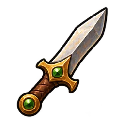
der Dolchdolch · 1×1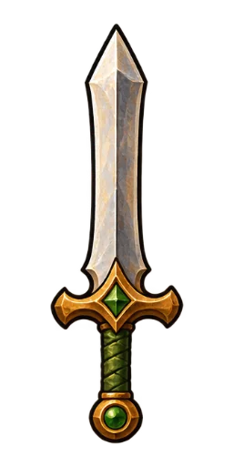
das Schwertschwert · 1×2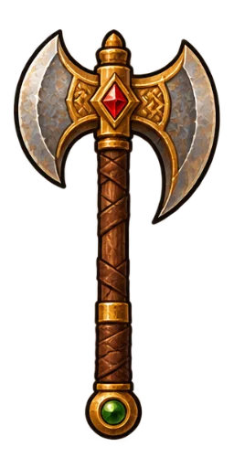
die Axtaxt · 1×2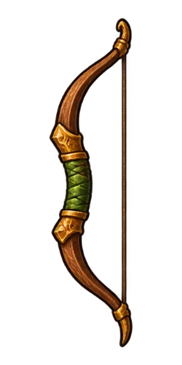
der Bogenbogen · 1×2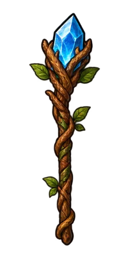
der Stabstab · 1×2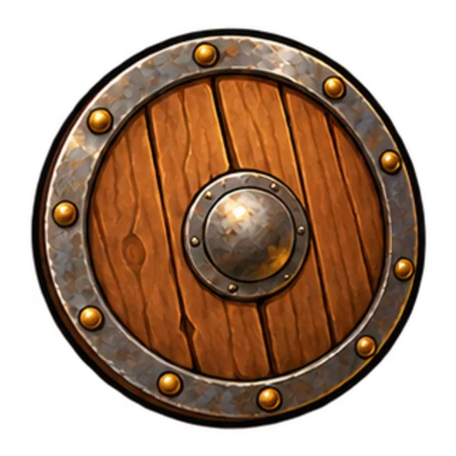
der Schildschild · 2×2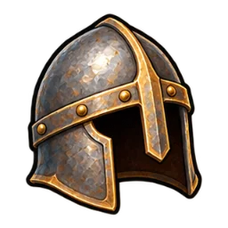
der Helmhelm · 1×1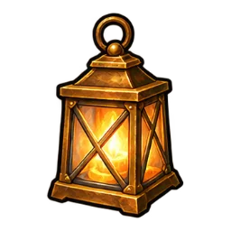
die Laternelaterne · 1×1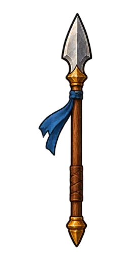
der Speerspeer · 1×2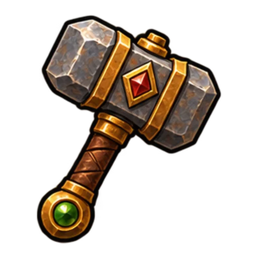
der Hammerhammer · 2×2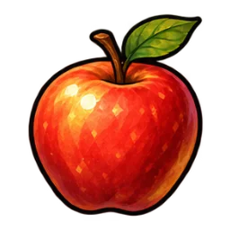
der Apfelapfel · 1×1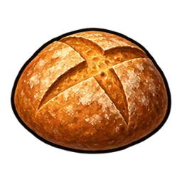
das Brotbrot · 1×1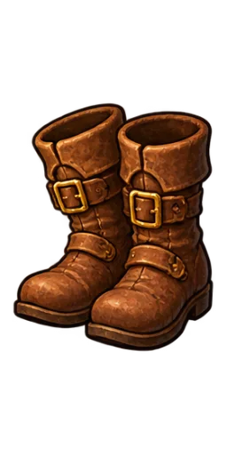
der Stiefelstiefel · 1×2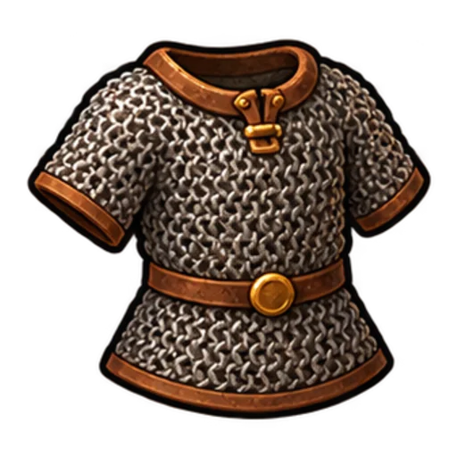
das Kettenhemdkettenhemd · 2×2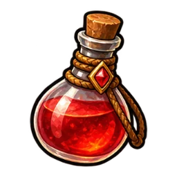
der Heiltrankheiltrank · 1×1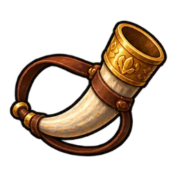
das Hornhorn · 1×1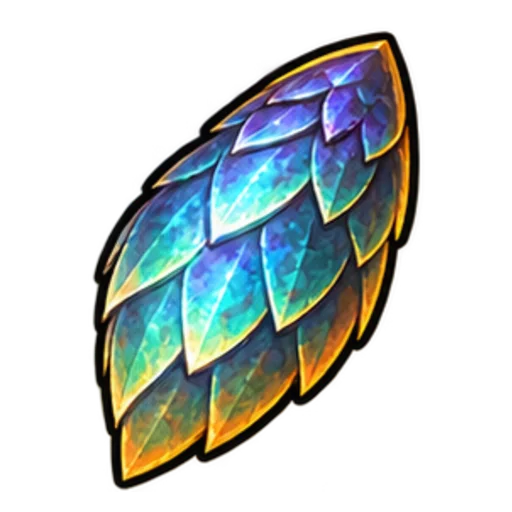
die Drachenschuppedrachenschuppe · 2×2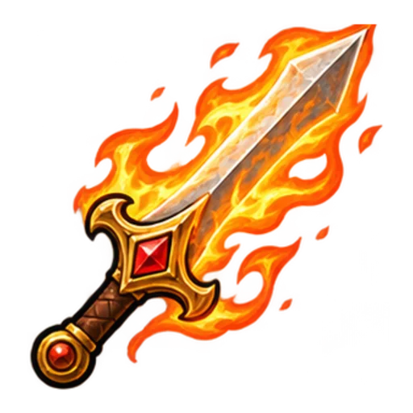
das Drachenfeuerschwertdrachenfeuerschwert · 2×2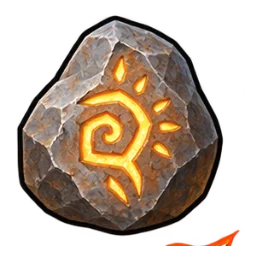
der Runensteinrunenstein · 1×1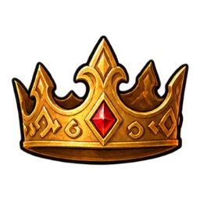
die Runenkronerunenkrone · 1×1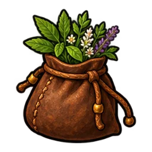
die Gartentaschegartentasche · 1×1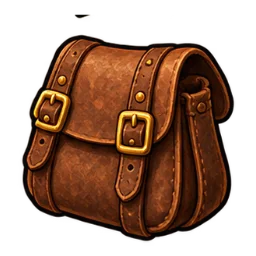
die Satteltaschesatteltasche · 1×1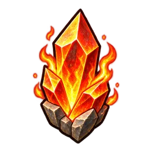
das Feuerfeuer · 1×1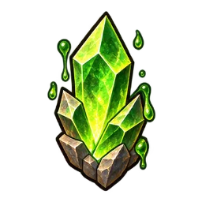
das Giftgift · 1×1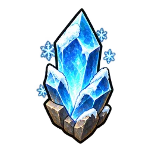
das Eiseis · 1×1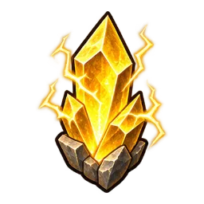
der Blitzblitz · 1×1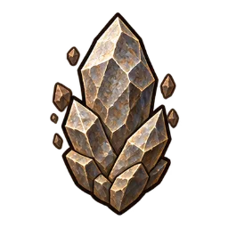
der Steinstein · 1×1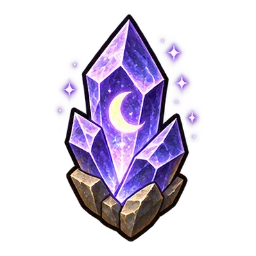
der Mondmond · 1×1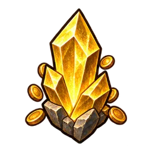
das Goldgold · 1×1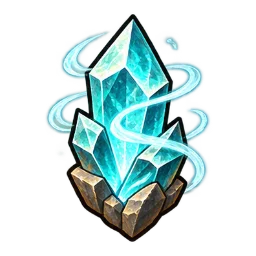
der Sturmsturm · 1×1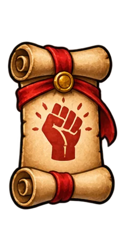
schlagenschlagen · 1×2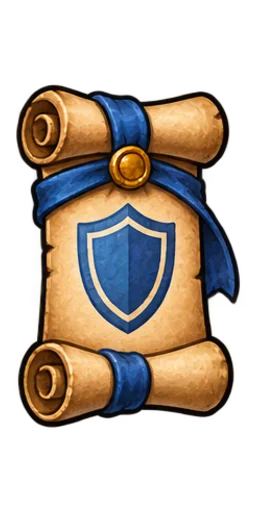
schützenschuetzen · 1×2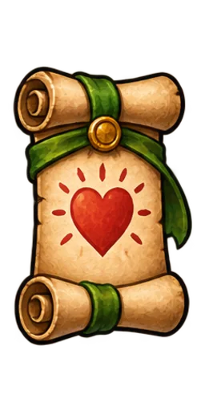
heilenheilen · 1×2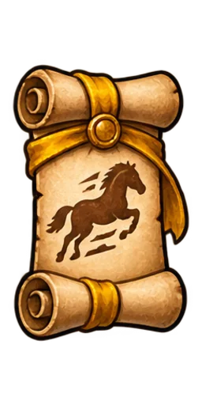
stürmenstuermen · 1×2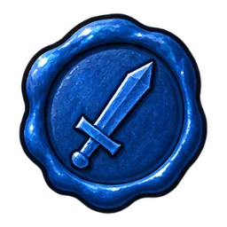
dersiegel-der · 1×1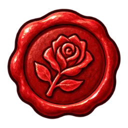
diesiegel-die · 1×1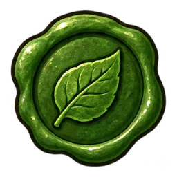
dassiegel-das · 1×1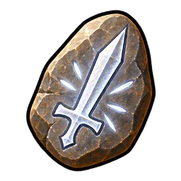
scharfrune-scharf · 1×1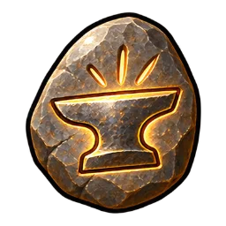
schwerrune-schwer · 1×1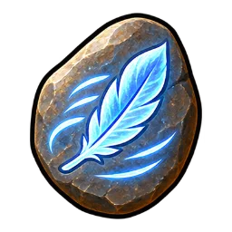
schnellrune-schnell · 1×1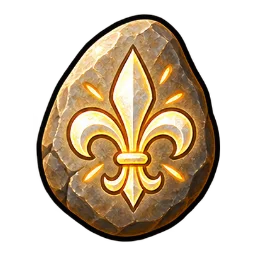
edelrune-edel · 1×1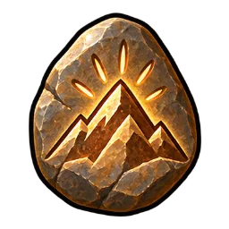
großrune-gross · 1×1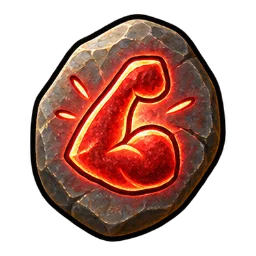
starkrune-stark · 1×1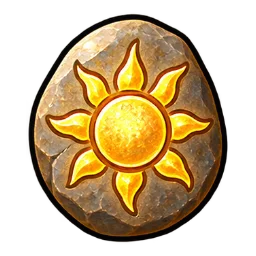
hellrune-hell · 1×1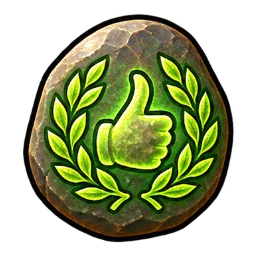
gutrune-gut · 1×1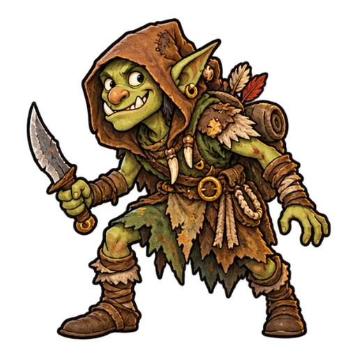
spaeher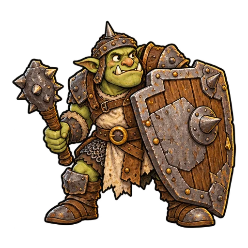
schildork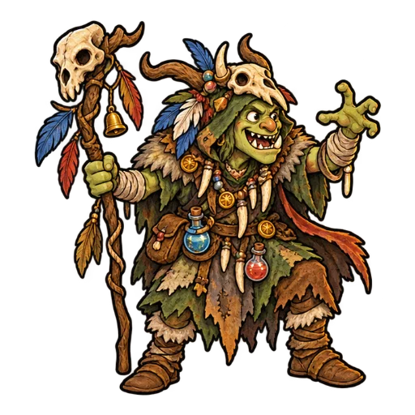
schamane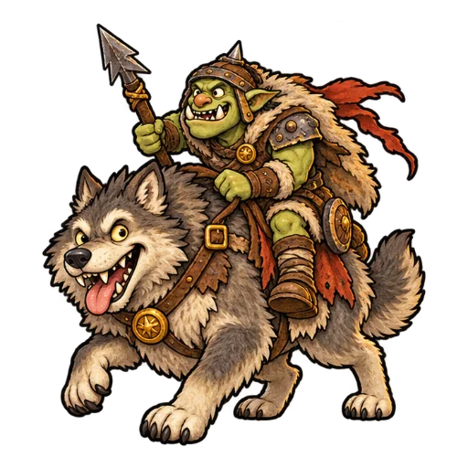
wolfsreiter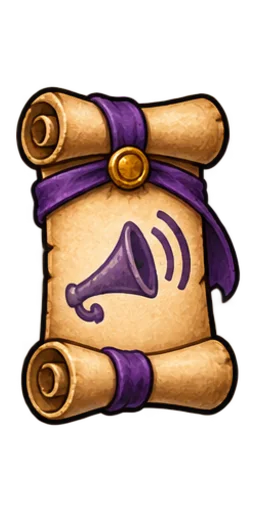
rufen (Horn)verb-rufentitelbild